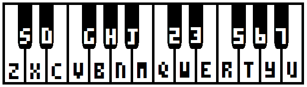

pico-8-edu.com


Using Pico-8
- Trapped in a black screen with text? Press
esc on the keyboard to open up the editor - Type everything in lowercase, make sure
caps lock is off - Press
ctrl + r to run your program
Code Editor
The scariest part of making games is arguably writing code. As you're learning to write code, take baby steps. If you're only making small changes, you'll never have big problems.
If you break down coding into smaller steps, here's what it looks like:
- Make a change to your code
- Take a guess about what effect your change will have
- Run your code with
ctrl + r - Look at what changed. Is it what you expected?
- Repeat, over and over and over
If you do this enough times, you can make a game. The hard part is knowing what changes to make in the first place. This comes with practice.
Pico-8 games are made up of 3 main functions:
function _init()
end
function _update()
end
function _draw()
endIf you're copy and pasting code, make sure you only have one of each of these functions. If you define the _draw() function twice, only the second one will take effect, and you will confuse yourself.
How To Count
We make a variable count to hold a number. Then we update it by adding one to it and assigning to itself. And then we draw it by using print(count)
function _init()
count = 0
end
function _update()
count = count + 1
end
function _draw()
print(count)
endSee how the numbers seem to scroll up really fast? We can make the number "stay in place" by clearing the screen every frame with cls()
function _init()
count = 0
end
function _update()
count = count + 1
end
function _draw()
cls()
print(count)
endHow To Draw
Pico-8 has built-in pixel art tools, but you can also use code to draw basic shapes like circles, rectangles, and lines. Let's use the circfill() function to draw a filled-in circle.
function _draw()
cls()
circfill(64, 64, 10, 8)
endThe first two arguments set the position. The third argument sets the radius. The fourth argument sets the color. Try tweaking these to see how the circle responds.
How To Draw And Count At The Same Time
Did you try tweaking the numbers previous example? Once you get a feel for what each number does, you'll be ready for this next example: changing the circle's values with code instead of by hand.
If we take the counting example from before, we can plug our count variable into the circfill function and get movement.
function _init()
count = 0
end
function _update()
count = count + 1
end
function _draw()
cls()
print(count)
circfill(count, 64, 10, 8)
endLook at that circle go. Wonder where he's going?
Sprite Editor
This is where you draw the art for your game. This is arguably the funnest panel. Sprites are usually drawn as 8x8 graphics.
- Right click to grab color from canvas
- Scroll mouse wheel to zoom in and out
ctrl + click to replace colors (this is like the fill tool, but colors don't have to be touching)
Map Editor
This is where you put down objects in a grid to create a game world.
- Press
tab to show full screen - Hold
space then click and drag to pan - Not every game needs a map
SFX/Pattern Editor:
This is where you can input notes to make little bits of music and sound effects.
- Sound effects and music patterns are the same thing. Sound effects are just music patterns played really fast
- SPD (speed) might work differently than you expect: low numbers are faster, higher numbers are slower. Click the number to increase, right click to decrease
- Press
TAB to change view between Sound Effect View and Music Tracker View - Press
space to play - Sound Effect View:
- Click and drag to draw out a sound effect
- Higher is higher pitched, lower is lower pitched
- Strip at the bottom sets volume. Delete notes by setting volume to 0
In Music Tracker View here's how your computer keyboard maps to a piano keyboard:
Music Editor
This is where you string together patterns into musical arrangements. You can play 4 different voices at a time, so think about how to break apart your musical ideas.